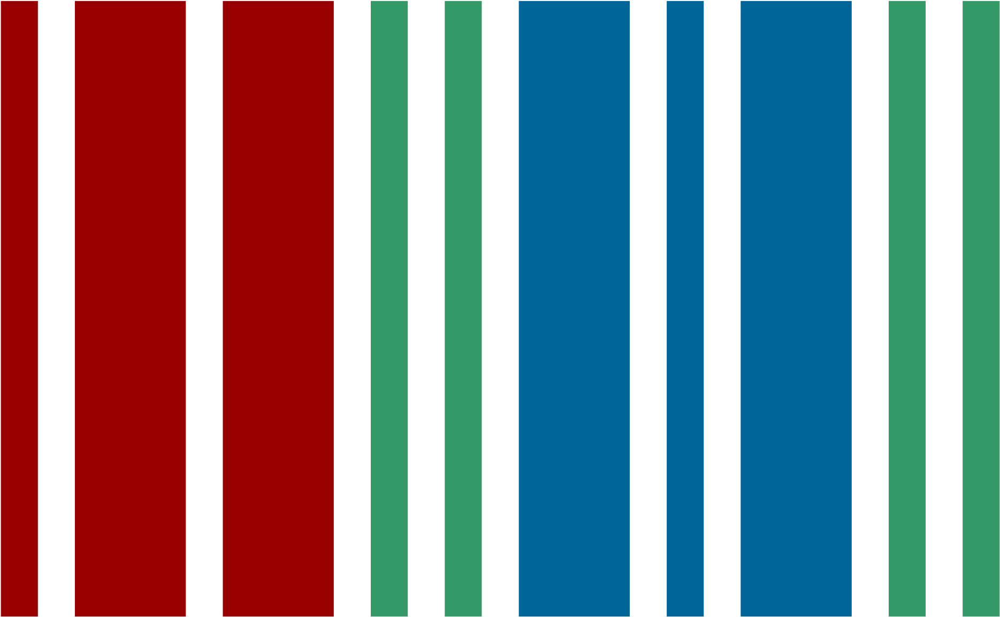

Wikipedia es alojada por la Fundación Wikimedia, una organización sin fines de lucro que también alberga una gama de otros proyectos.
Descargar Wikipedia para Android o iOS
Guarda tus artículos favoritos para leerlos sin conexión, sincroniza tus listas de lectura en varios dispositivos y personaliza tu experiencia de lectura con la aplicación oficial de Wikipedia.


Commons
Fotos libremente utilizables y más
Wikilibros
Libros de contenido libre
Wikiversidad
Plataforma educativa libre
Wikisource
La biblioteca libre
Wikiviajes
La guía de viajes libre
Wikinoticias
La fuente de noticias libre
Wikiquotes
La colección de citas
Wikispecies
Directorio de especies libre
Wikcionario
El diccionario libre
Wikidata
Base de conocimientos libre
Mediawiki
Aplicación wiki libre y abierta
Meta-Wiki
Coordinación y documentación comunitaria